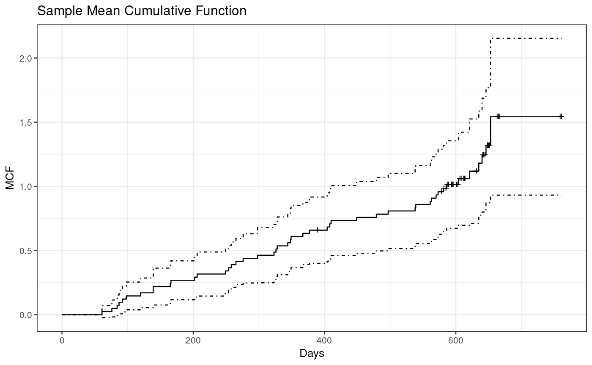
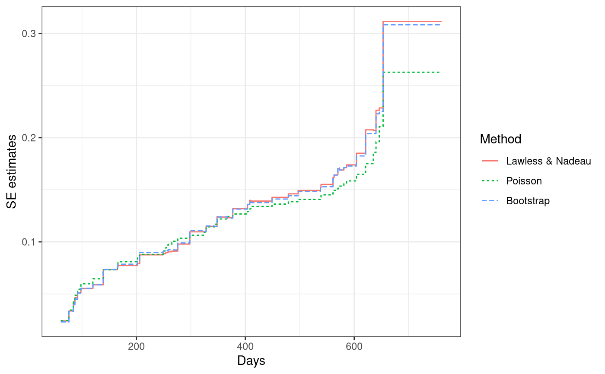
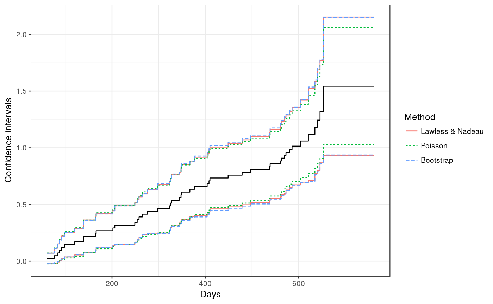
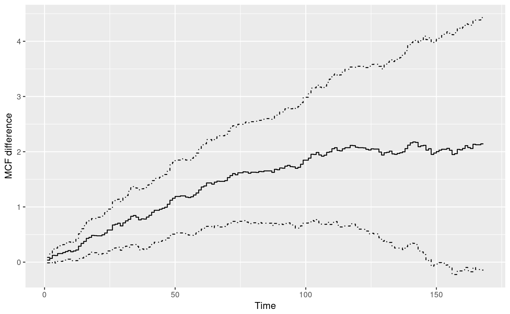
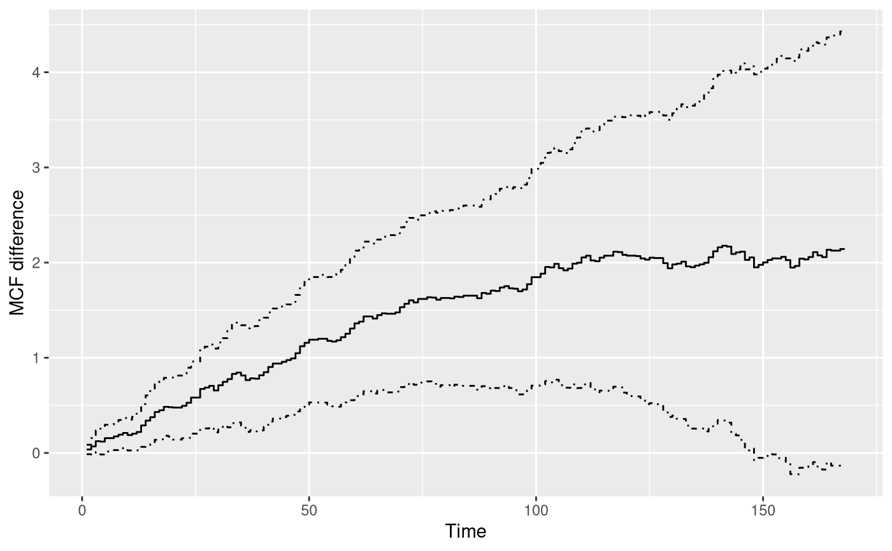

Mean Cumulative Function (MCF)
An S4 class generic function that returns the mean cumulative function (MCF) estimates from a fitted model or returns the nonparametric MCF estimates (also called the Nelson-Aalen estimator) from the sample data.
mcf(object, ...) # S4 method for formula mcf(object, data, subset, na.action, variance = c("LawlessNadeau", "Poisson", "bootstrap"), logConfInt = FALSE, level = 0.95, control = list(), ...) # S4 method for rateReg mcf(object, newdata, groupName, groupLevels, level = 0.95, na.action, control = list(), ...)
Arguments
| object | An object used to dispatch a method. |
|---|---|
| ... | Other arguments for future usage. |
| data | A data frame, list or environment containing the variables in
the model. If not found in data, the variables are taken from
|
| subset | An optional vector specifying a subset of observations to be used in the fitting process. |
| na.action | A function that indicates what should the procedure do if
the data contains |
| variance | A character specifying the method for variance estimates.
The available options are |
| logConfInt | A logical value. If |
| level | An optional numeric value indicating the confidence level required. The default value is 0.95. |
| control | An optional named list specifying other options. For
The option For formula method, the available named elements are given as follows:
|
| newdata | An optional data frame. If specified, the data frame should have the same column names as the covariate names appearing in the formula of original fitting. |
| groupName | An optional length-one charactor vector to specify the name
for grouping each unique row in |
| groupLevels | An optional charactor vector to specify the levels for
each unique row in |
Value
A mcf.formula or mcf.rateReg object.
A brief description of the slots of a mcf.formula object is given as
follows:
formula: Model Formula.data: Processed data based on the model formula or an empty data frame ifkeep.datais set to beFALSE.MCF: A data frame containing estimates for sample MCF.origin: Time origins.multiGroup: A logical value indicating whether MCF is estimated for different groups respectively.logConfInt: A logical value indicating whether the variance estimates are based on the normality of logarithm of the MCF estimates.level: Confidence level specified.
Most slots of a mcf.rateReg object are inherited from the input
rateReg object. A brief description of other slots is given as
follows:
newdata: Given dataset used to estimate MCF.MCF: A data frame containing MCF estimates.level: Confidence level specified.na.action: The way handling missing values.control: The control list.multiGroup: A logical value indicating whether MCF is estimated for different groups respectively.
Details
For formula object with Survr object as response, the
covariate specified at the right hand side of the formula should be either
1 or any "linear" conbination of categorical variable in the data.
The former computes the overall sample MCF. The latter computes the sample
MCF for each level of the combination of the categorical variable(s)
specified, respectively. The sample MCF is also called Nelson-Aalen
nonparametric estimator (Nelson 2003) and computed on each time point from
sample data. The point estimate of sample MCF at each time point does not
assume any particular underlying model. The variance estimates at each time
point is computed following the Lawless and Nadeau method (LawLess and
Nadeau 1995), the Poisson process method, or the bootstrap methods. The
approximate confidence intervals are provided as well, which are constructed
based on the asymptotic normality of the MCF itself (by default) or the
logarithm of MCF.
For rateReg object, mcf estimates the baseline
MCF and its confidence interval at each time grid if argument newdata
is not specified. Otherwise, mcf estimates MCF and its confidence
interval for the given newdata based on Delta-method.
Methods (by class)
formula: Sample MCF from data.rateReg: Estimated MCF from a fitted model.
References
Lawless, J. F. and Nadeau, C. (1995). Some Simple Robust Methods for the Analysis of Recurrent Events. Technometrics, 37, 158--168.
Nelson, W. B. (2003). Recurrent Events Data Analysis for Product Repairs, Disease Recurrences, and Other Applications (Vol. 10). SIAM.
See also
rateReg for model fitting;
mcfDiff for comparing two-sample MCFs.
plot-method for plotting MCF.
Examples
library(reda) ### sample MCF ## Example 1. valve-seat data ## the default variance estimates by Lawless and Nadeau (1995) method valveMcf0 <- mcf(Survr(ID, Days, No.) ~ 1, data = valveSeats) plot(valveMcf0, conf.int = TRUE, mark.time = TRUE, addOrigin = TRUE) + ggplot2::xlab("Days") + ggplot2::theme_bw()## variance estimates following Poisson process model valveMcf1 <- mcf(Survr(ID, Days, No.) ~ 1, data = valveSeats, variance = "Poisson") ## variance estimates by bootstrap method (with 1,000 bootstrap samples) valveMcf2 <- mcf(Survr(ID, Days, No.) ~ 1, data = valveSeats, variance = "bootstrap", control = list(B = 2e2)) ## comparing the variance estimates from different methods library(ggplot2) ciDat <- rbind(cbind(valveMcf0@MCF, Method = "Lawless & Nadeau"), cbind(valveMcf1@MCF, Method = "Poisson"), cbind(valveMcf2@MCF, Method = "Bootstrap")) ggplot(ciDat, aes(x = time, y = se)) + geom_step(aes(color = Method, linetype = Method)) + xlab("Days") + ylab("SE estimates") + theme_bw()## comparing the confidence interval estimates from different methods ggplot(ciDat, aes(x = time)) + geom_step(aes(y = MCF)) + geom_step(aes(y = lower, color = Method, linetype = Method)) + geom_step(aes(y = upper, color = Method, linetype = Method)) + xlab("Days") + ylab("Confidence intervals") + theme_bw()## Example 2. the simulated data simuMcf <- mcf(Survr(ID, time, event) ~ group + gender, data = simuDat, ID %in% 1 : 50) plot(simuMcf, conf.int = TRUE, lty = 1 : 4, legendName = "Treatment & Gender")### estimate MCF difference between two groups ## one sample MCF object of two groups mcf0 <- mcf(Survr(ID, time, event) ~ group, data = simuDat) ## two-sample pseudo-score tests mcfDiff.test(mcf0)#> Two-Sample Pseudo-Score Tests: #> Statistic Variance Chisq DF Pr(>Chisq) #> Constant Weight 52.5855 670.1014 4.1266 1 0.042214 * #> Linear Weight 35.7687 158.9869 8.0472 1 0.004557 ** #> --- #> Signif. codes: 0 ‘***’ 0.001 ‘**’ 0.01 ‘*’ 0.05 ‘.’ 0.1 ‘ ’ 1 #> #> Variance Estimator: robust## or explicitly ask for the difference of two sample MCF mcf1 <- mcf(Survr(ID, time, event) ~ 1, data = simuDat, subset = group %in% "Contr") mcf2 <- mcf(Survr(ID, time, event) ~ 1, data = simuDat, subset = group %in% "Treat") ## perform two-sample tests and estimate difference at the same time mcf12_diff1 <- mcfDiff(mcf1, mcf2) mcf12_diff2 <- mcf1 - mcf2 # or equivalently using the `-` method stopifnot(all.equal(mcf12_diff1, mcf12_diff2)) mcf12_diff1#> Call: #> mcfDiff(mcf1 = mcf1, mcf2 = mcf2) #> #> Two-Sample Pseudo-Score Tests: #> Statistic Variance Chisq DF Pr(>Chisq) #> Constant Weight 52.5855 670.1014 4.1266 1 0.042214 * #> Linear Weight 35.7687 158.9869 8.0472 1 0.004557 ** #> --- #> Signif. codes: 0 ‘***’ 0.001 ‘**’ 0.01 ‘*’ 0.05 ‘.’ 0.1 ‘ ’ 1 #> #> Variance Estimator: robustplot(mcf12_diff1)### For estimated MCF from a fitted model, ### see examples given in function rateReg.